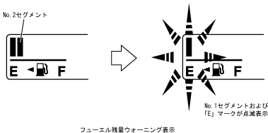

| フューエルゲージ |
| ● |
フューエルゲージは8セグメントのバーグラフを点灯/消灯させることにより，フューエル残量を表示します。
|
| ● |
フューエルセンダーゲージからのフューエルタンク内の液量信号により，メーターコンピューターがLCDドライバーを駆動して該当するLCDのセグメントを点灯します(フューエル残量表示機能)。
|
| ● |
メーター内のフューエルゲージNo.2セグメントが消灯（フューエル残量約6.8L時）すると同時に，No.1セグメント・「E」マークが点滅を始め，フューエル残量が少ないことを警告します（フューエル残量ウォーニング表示機能）。
|
|  |
 フューエルゲージ作動 フューエルゲージ作動
|